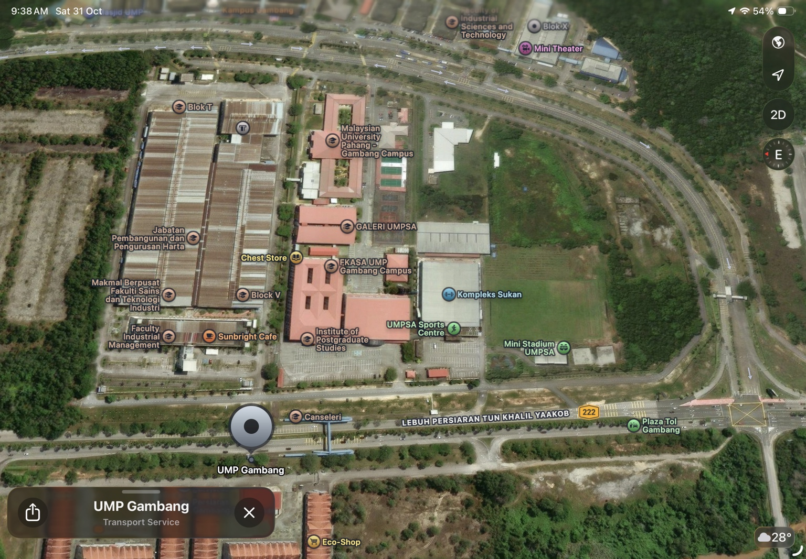
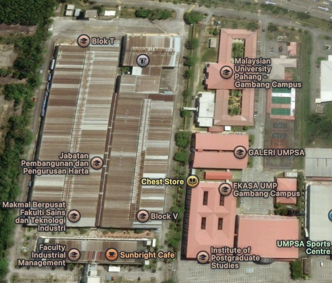

Peta keseluruhan kampus
Pilih pin bernombor untuk melihat SDG dan zon rujukannya.

Nota ketepatan: pin menunjukkan kedudukan zon rujukan berdasarkan peta zon dan maklumat dalam PDF asal. Ia ialah penanda panduan kawasan, bukan koordinat ukur atau lokasi GPS tepat bagi setiap gerai. Tangkapan satelit yang dibekalkan tidak memaparkan Tasik Paya Besar sepenuhnya; rujuk peta zon asal bagi Zon E.
Ringkasan mengikut zon
Pilih zon untuk membuka paparan peta yang lebih dekat.
Peta terperinci mengikut zon
Pilih Zon A hingga Zon F untuk memfokuskan kawasan berkenaan.

Direktori 17 SDG
Ringkasan matlamat dan zon lokasi berdasarkan dokumen program.
Dokumen panduan PDF
Setiap fail mengandungi halaman asal bagi SDG berkenaan, tanpa reka bentuk semula atau penukaran kandungan.